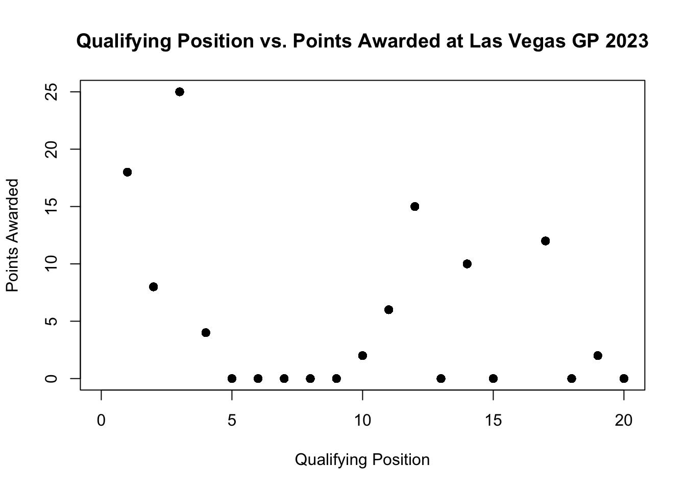
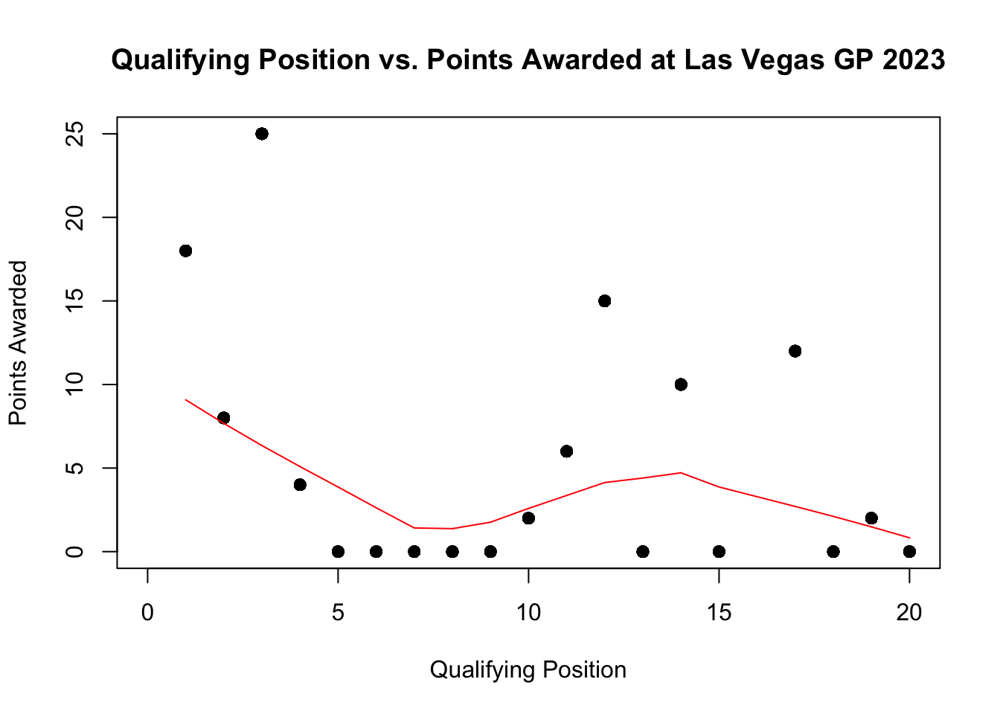
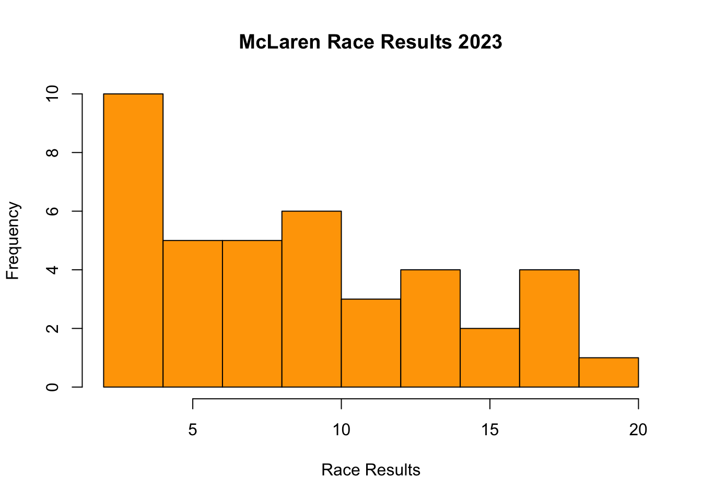
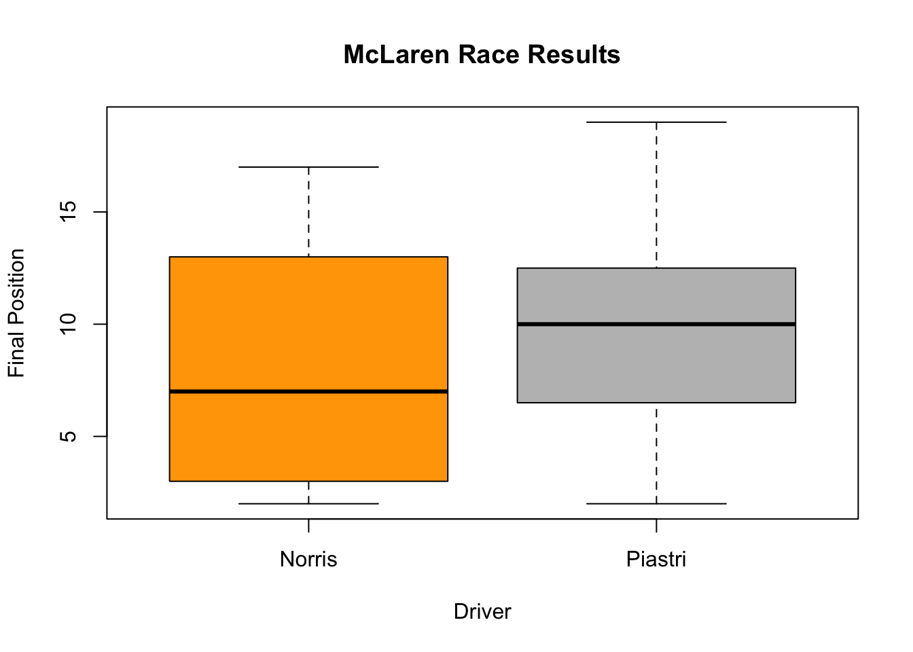
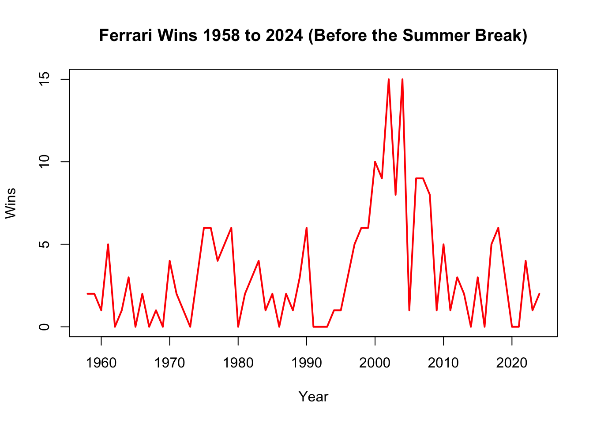
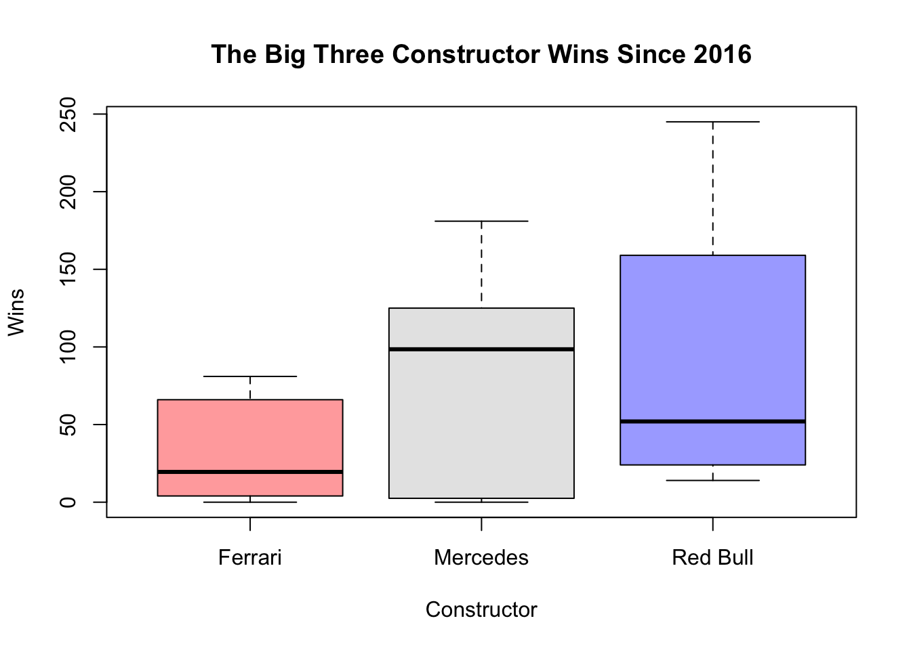
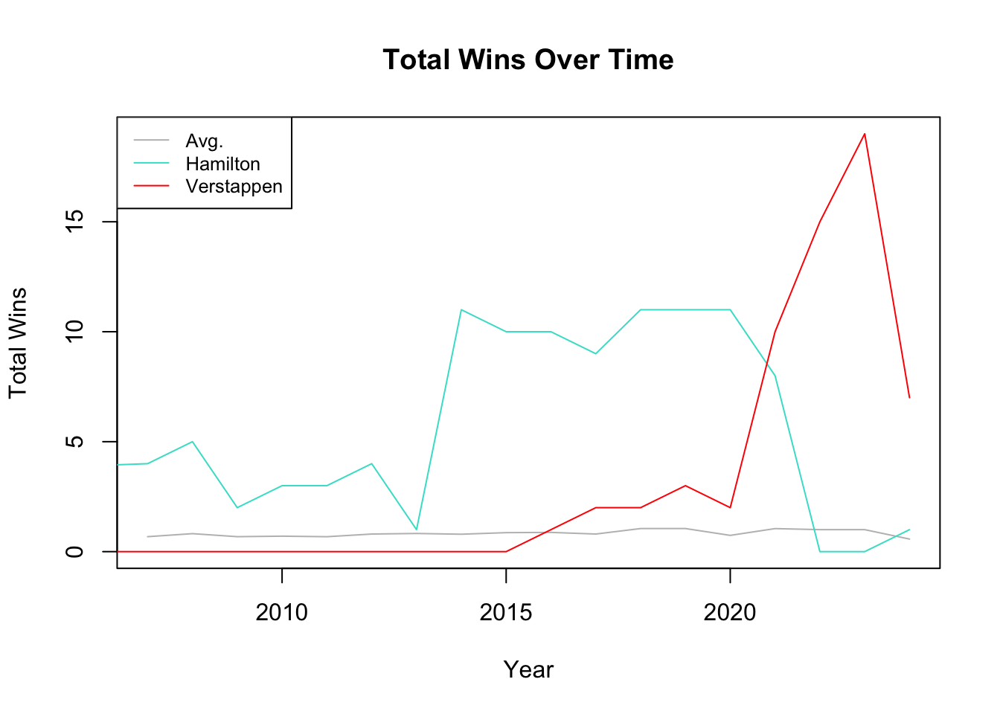

# plot(x, y,
# xlab = "Independent Variable (x)", # Label for the x-axis
# ylab = "Dependent Variable (y)", # Label for the y-axis
# xlim = c(0, 12), # Limits for the x-axis
# ylim = c(0, 120), # Limits for the y-axis
# main = "Scatterplot of the Relationship between X and Y",
# Main title of the plot
# col = "black", # Color of the points
# pch = 19) # Shape of pointsBase R Data Visualization
In Base R, your plot code can be divided into two major sections: Parameters, Plot attributes, and The legend. The parameter section fixes the settings for all your plots, basically you are telling it what variables and information you want it to use. The plot section is where you design your plot, such as adding labels and titles.
Scatter Plots
The first plot style we will be looking at is a scatter plot. To plot a scatter plot you will use the most common function in base r to plot it, plot() .
In the following example, we will plot the qualifying position for the 20 drivers and the final points they were awarded for the Las Vegas Grand Prix in 2023.
library(tidyverse)── Attaching core tidyverse packages ──────────────────────── tidyverse 2.0.0 ──
✔ dplyr 1.1.4 ✔ readr 2.1.5
✔ forcats 1.0.0 ✔ stringr 1.5.1
✔ ggplot2 3.5.2 ✔ tibble 3.2.1
✔ lubridate 1.9.3 ✔ tidyr 1.3.1
✔ purrr 1.0.4
── Conflicts ────────────────────────────────────────── tidyverse_conflicts() ──
✖ dplyr::filter() masks stats::filter()
✖ dplyr::lag() masks stats::lag()
ℹ Use the conflicted package (<http://conflicted.r-lib.org/>) to force all conflicts to become errorslibrary(RandomData)
scatterplot <- race_stats |>
filter(circuit == "Las Vegas Strip Street Circuit" & year == "2023")
plot(scatterplot$quali_position, scatterplot$points,
xlab= "Qualifying Position",
ylab= "Points Awarded",
xlim = c(0, 20),
ylim = c(0, 25),
main = "Qualifying Position vs. Points Awarded at Las Vegas GP 2023",
col = "black",
pch = 19)
If you wanted to add a line that shows the correlation we can do this by adding the lines() after the plot.
plot(scatterplot$quali_position, scatterplot$points,
xlab= "Qualifying Position",
ylab= "Points Awarded",
xlim = c(0, 20),
ylim = c(0, 25),
main = "Qualifying Position vs. Points Awarded at Las Vegas GP 2023",
col = "black",
pch = 19)
lines(lowess(scatterplot$quali_position, scatterplot$points), col = "red")
Histograms
Frequency histograms are useful when you want to get an idea about the distribution of values in a numeric variable. The hist() is the function that plots histograms and takes a numeric vector as its main argument.
# hist(data$x,
# col = "color",
# main = "Main Title",
# xlab = "Label X-axsis")In the following example, we will look at the distribution of the final positions of the McLaren 2023 season for both of their drivers. To set up this histogram, I construct a new variable called, final_position, and save it as a new object called McLarenStandings_2023.
McLarenStandings_2023 <- race_stats |>
select(circuit, year, constructor, surname) |>
# remove duplicates
unique() |>
filter(constructor == "McLaren" & year == 2023) |>
mutate(
final_position = case_when(
#PIASTRI
circuit == "Bahrain International Circuit" & surname == "Piastri" ~ "DNF",
circuit == "Jeddah Corniche Circuit" & surname == "Piastri" ~ "15",
circuit == "Albert Park Grand Prix Circuit" & surname == "Piastri" ~ "8",
circuit == "Baku City Circuit" & surname == "Piastri" ~ "11",
circuit == "Miami International Autodrome" & surname == "Piastri" ~ "19",
circuit == "Circuit de Monaco" & surname == "Piastri" ~ "10",
circuit == "Circuit de Barcelona-Catalunya" & surname == "Piastri" ~ "13",
circuit == "Circuit Gilles Villeneuve" & surname == "Piastri" ~ "11",
circuit == "Red Bull Ring" & surname == "Piastri" ~ "16",
circuit == "Silverstone Circuit" & surname == "Piastri" ~ "4",
circuit == "Hungaroring" & surname == "Piastri" ~ "5",
circuit == "Circuit de Spa-Francorchamps" & surname == "Piastri" ~ "DNF",
circuit == "Circuit Park Zandvoort" & surname == "Piastri" ~ "9",
circuit == "Autodromo Nazionale di Monza" & surname == "Piastri" ~ "12",
circuit == "Marina Bay Street Circuit" & surname == "Piastri" ~ "7",
circuit == "Suzuka Circuit" & surname == "Piastri" ~ "3",
circuit == "Losail International Circuit" & surname == "Piastri" ~ "2",
circuit == "Circuit of the Americas" & surname == "Piastri" ~ "DNF",
circuit == "Autódromo Hermanos Rodríguez" & surname == "Piastri" ~ "8",
circuit == "Autódromo José Carlos Pace" ~ "14",
circuit == "Las Vegas Strip Street Circuit" & surname == "Piastri" ~ "10",
circuit == "Yas Marina Circuit" & surname == "Piastri" ~ "6",
# NORRIS
circuit == "Bahrain International Circuit" & surname == "Norris" ~ "17",
circuit == "Jeddah Corniche Circuit" & surname == "Norris" ~ "17",
circuit == "Albert Park Grand Prix Circuit" & surname == "Norris" ~ "6",
circuit == "Baku City Circuit" & surname == "Norris" ~ "9",
circuit == "Miami International Autodrome" & surname == "Norris" ~ "17",
circuit == "Circuit de Monaco" & surname == "Norris" ~ "9",
circuit == "Circuit de Barcelona-Catalunya" & surname == "Norris" ~ "17",
circuit == "Circuit Gilles Villeneuve" & surname == "Norris" ~ "13",
circuit == "Red Bull Ring" & surname == "Norris" ~ "4",
circuit == "Silverstone Circuit" & surname == "Norris" ~ "2",
circuit == "Hungaroring" & surname == "Norris" ~ "2",
circuit == "Circuit de Spa-Francorchamps" & surname == "Norris" ~ "7",
circuit == "Circuit Park Zandvoort" & surname == "Norris" ~ "9",
circuit == "Autodromo Nazionale di Monza" & surname == "Norris" ~"8",
circuit == "Marina Bay Street Circuit" & surname == "Norris" ~ "2",
circuit == "Suzuka Circuit" & surname == "Norris" ~ "2",
circuit == "Losail International Circuit" & surname == "Norris" ~ "3",
circuit == "Circuit of the Americas" & surname == "Norris" ~ "3",
circuit == "Autódromo Hermanos Rodríguez" & surname == "Norris" ~ "5",
circuit == "Autódromo José Carlos Pace" ~ "2",
circuit == "Las Vegas Strip Street Circuit" & surname == "Norris" ~ "DNF",
circuit == "Yas Marina Circuit" & surname == "Norris" ~ "5"
)
)
# change from a character to numeric
McLarenStandings_2023 <- McLarenStandings_2023 |>
mutate(final_position_numeric = ifelse(final_position == "DNF", 0, as.numeric(final_position)))
# make histogram
hist(McLarenStandings_2023$final_position_numeric,
# change color
col = "orange",
# add main title
main = "McLaren Race Results 2023",
# add title on x-axsis
xlab = "Race Results")
Box Plots
Boxplots (or box-and-whisker plots) are useful to graphically summarise the distribution of a variable, identify potential unusual values and compare distributions between different groups. We use the function boxplot() . I use the new data set and new variable I constructed in the previous example for histograms.
# boxplot(data$y ~ data$x,
# col = "color",
# main = "Main Title",
# ylab = "Label Y-axsis",
# xlab = "Label X-axsis")In the example we will be using, plots the final position standings for the two McLaren Drivers during the 2023 season.
# Boxplot for average race result in 2023 for McLaren Drivers
boxplot(McLarenStandings_2023$final_position_numeric ~ McLarenStandings_2023$surname,
# add color for each driver
col = c("orange", "grey"),
# add title
main = "McLaren Race Results",
# add title for y-axsis
ylab = "Final Position",
# add title on x-axsis
xlab = "Driver")
The thick horizontal line in the middle of the box is the median of the final positions for the two drivers. The upper line of the box is the upper quartile, the 75th percentile, and the lower line is the lower quartile, the 25th percentile. The distance between the upper and lower quartiles is known as the inter quartile range and represents where 50 percent of final position standings on average were for the two drivers. The dotted vertical lines are called the whiskers and their length is determined as 1.5 x the inter quartile range and any points outside the whiskers are potential outliers.
Time Series
A time series plot looks at a variable over time to see trends. To make a time series graph, we use the same function as scatter plots, plot(), however, we change the type of graph from a point to a line graph. We can do this by changing the type = in the function from a type = "p" to a type = "l". In addition, the variable on the x-axis should always be a variable that measures time.
# Time Series Plot
# plot(data$y ~ data$timevariable,
# type ="l",
# col = "color",
# main = "Main Title",
# ylab = "Label Y-axsis",
# xlab = "Label X-axsis")In the following example, we look at the total wins for Ferrari drivers over time. In this example, we are using the data set constructors_stats.
?constructors_stats
# Calculate total wins per year for Ferrari
ferrari_wins <- constructors_stats |>
filter(constructor == "Ferrari") |>
group_by(year) |>
summarize(total_wins = sum(max(constructor_wins)))
## Make Time Series plot
plot(ferrari_wins$total_wins ~ ferrari_wins$year,
# make it a line not points
type = "l",
# add color
col = c("red"),
# change width of the line
lwd = 2,
# add main title
main = "Ferrari Wins 1958 to 2024 (Before the Summer Break)",
# add title on x-axsis
xlab = "Year",
# add title on y-axsis
ylab = "Wins")
More Adv. Code for Base R Visualization
Now that you know the basics, we can add more details and change things.
I have provided some examples. In the first example, I add three different box plots with different colors and I adjust opacity of the colors.
## BOX PLOT ##
# Wrangle the Data
thebigthree <- constructors_stats |>
# Filter for the top 3 constructors since 2016
filter((constructor == "Mercedes" | constructor == "Red Bull" | constructor == "Ferrari") & year > 2016) |>
# calculate total wins per year per constructor
group_by(constructor, year) |>
summarize(total_wins = sum(constructor_wins))`summarise()` has grouped output by 'constructor'. You can override using the
`.groups` argument.# Create boxplot
boxplot(total_wins ~ constructor,
data = thebigthree,
main = "The Big Three Constructor Wins Since 2016",
xlab = "Constructor",
ylab = "Wins",
col = c(adjustcolor("red", alpha.f = 0.4), # alpha.f adjusts the opacity
adjustcolor("grey", alpha.f = 0.4),
adjustcolor("blue", alpha.f = 0.4)))
In my second example, I add two more lines to my time series graph, change their colors, and also add a legend.
## TIME SERIES ##
# Wrangle the Data
# Avg wins for all drivers since 2006
avg_wins <- driver_stats |>
filter(year > 2006) |>
group_by(surname, year) |>
summarize(
max_wins = max(driver_wins)) |>
ungroup() |>
group_by(year) |>
summarize(
total_wins = mean(max_wins))`summarise()` has grouped output by 'surname'. You can override using the
`.groups` argument.# Avg wins for Lewis Hamilton since joining the grid in 2007
hamilton <- driver_stats |>
# Filter for the Lewis Hamilton
filter(surname == "Hamilton") |>
# calculate total wins per year for Hamilton
group_by(year) |>
summarize(total_wins = sum(max(driver_wins)))
# Avg wins for Max Verstappen since joining the grid in 2015
verstappen <- driver_stats |>
# Filter for Max Verstappen
filter(surname== "Verstappen") |>
# calculate total wins per year for Verstappen
group_by(year) |>
summarize(total_wins = sum(max(driver_wins)))
# Create Time Series Plot
plot(avg_wins$year, avg_wins$total_wins, type = "l",
col = "grey",
main = "Total Wins Over Time",
xlab = "Year",
ylab = "Total Wins",
ylim = range(c(avg_wins$total_wins,
hamilton$total_wins,
verstappen$total_wins
)))
# Add lines for Hamilton and Verstappen
lines(hamilton$year, hamilton$total_wins, col = "turquoise", type = "l")
lines(verstappen$year, verstappen$total_wins, col = "red", type = "l")
# Add a legend to the plot
legend("topleft", legend = c("Avg.", "Hamilton", "Verstappen"),
col = c("grey", "turquoise", "red"), lty = 1, cex = 0.8)